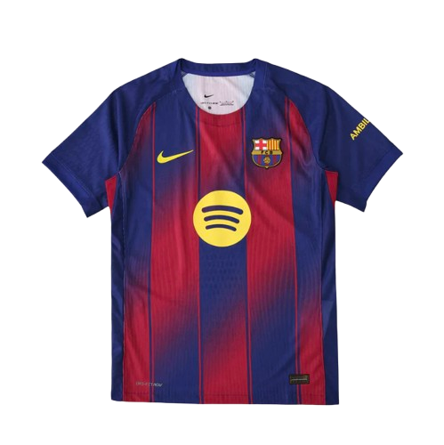
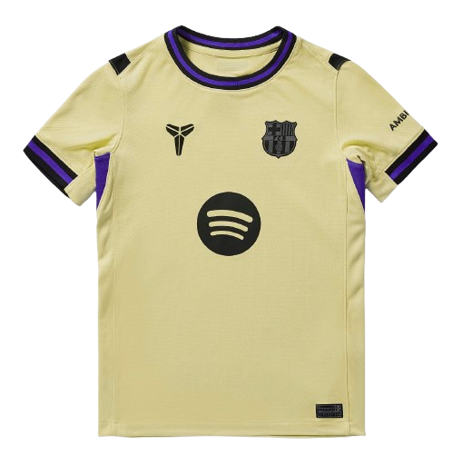
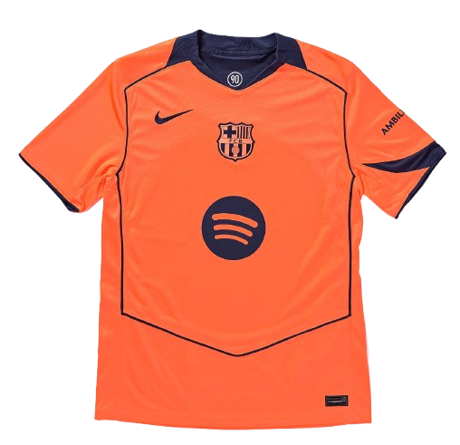
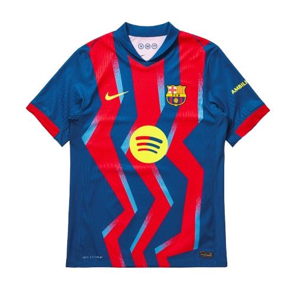

Home Kit

A modern blaugrana home design with dynamic zig-zag striping, creating a bold and gradient energetic look for the season.
The 2025/26 season marks another important chapter in the history of FC Barcelona as the club continues building a new era under head coach Hansi Flick. Entering the campaign after a highly successful previous year, Barcelona aimed to defend their domestic dominance in La Liga while also pushing for success in the UEFA Champions League. The season has been defined by the continued emergence of young stars such as Lamine Yamal alongside important contributions from players like Pedri and Raphinha. Barcelona also experienced a transitional period regarding their stadium situation, beginning the season away from their historic home while the redevelopment of Spotify Camp Nou progressed before eventually returning later in the campaign. Competing in multiple competitions including La Liga, the Copa del Rey, the Supercopa de España, and the Champions League, the 2025/26 campaign reflects Barcelona’s ambition to combine youth, attacking football, and tactical intensity as the club seeks to reestablish itself among Europe’s elite.

A modern blaugrana home design with dynamic zig-zag striping, creating a bold and gradient energetic look for the season.

A pale gold away kit with dark trim and purple accents, offering a sleek and premium aesthetic.

A striking bright orange third kit designed for maximum visibility and bold visual impact on European nights.

A classic blaugrana striped fourth kit that blends traditional vertical striping with a modern finish.